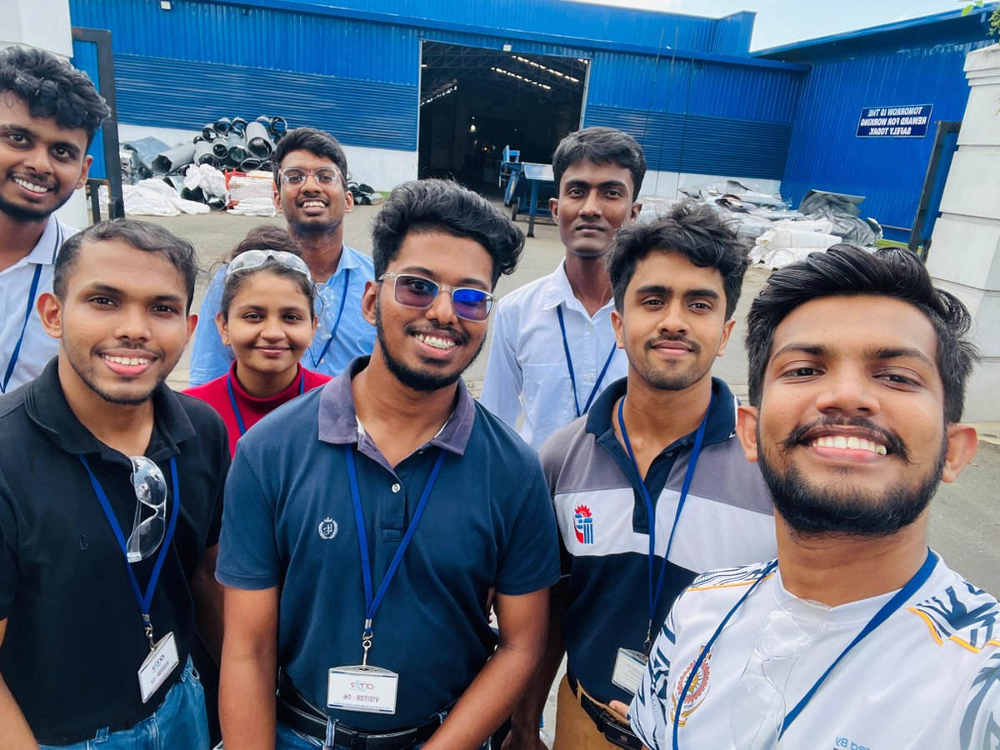
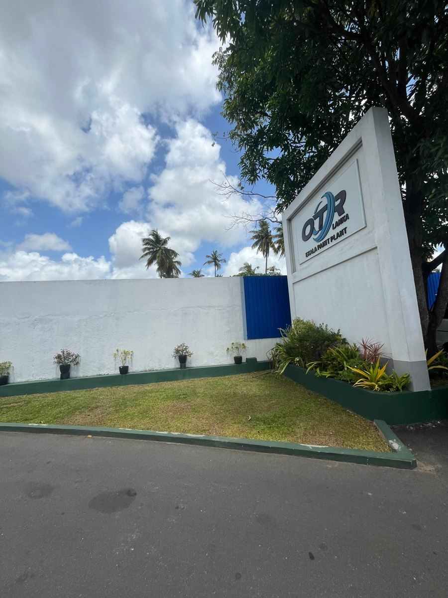
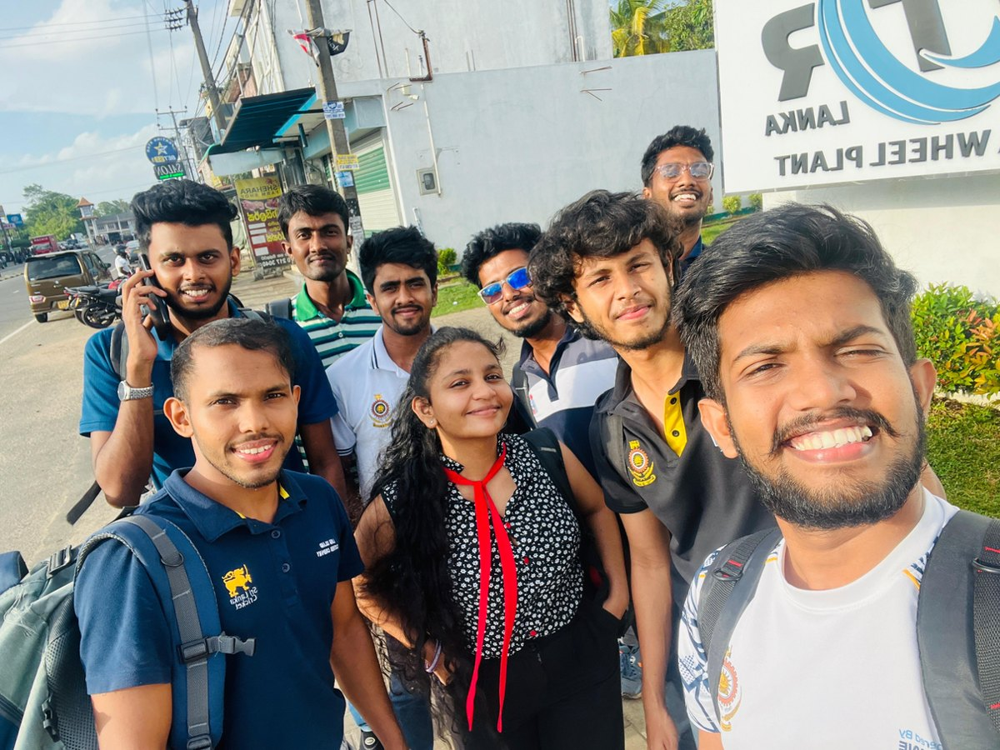

Project leadership
Served as team leader for the TPM project, contributing to the team's development and implementation of maintenance cycles.
OTR Engineered Solutions Lanka · Project lead
Building consistent care into everyday manufacturing.
I led a team developing and implementing CLIT maintenance cycles and autonomous-maintenance practices in an off-road vehicle tyre-rim manufacturing facility.
Explore my contribution
01 / Industrial engineering
Total Productive Maintenance (TPM) brings equipment care into day-to-day operations. This project focused on CLIT routines and autonomous maintenance, with the aim of improving equipment reliability and establishing a sustainable maintenance culture.
Served as team leader for the TPM project, contributing to the team's development and implementation of maintenance cycles.
Developed and implemented Clean, Lubricate, Inspect and Tighten cycles, supported by on-site machinery observations and operational data collection.
Prepared maintenance schedules and standard operating procedures (SOPs). The work developed my practical understanding of heavy industrial machinery, including rollers, presses and punching machines.
02 / Maintenance method
CLIT provides a structure for routine equipment care. Each activity addresses a different source of deterioration and helps make maintenance requirements clearer.
Maintain cleanliness so equipment condition is easier to observe and contamination is easier to identify.
Organise lubrication requirements to support the condition and reliable operation of moving components.
Use routine condition checks to identify signs of wear, damage or abnormal operation.
Include checks of fastening points to help identify looseness and maintain secure assemblies.
Work towards zero breakdowns, enhance equipment reliability and support a sustainable maintenance culture aligned with ISO standards.
03 / On site
Photographs from my TPM project portfolio at OTR Engineered Solutions Lanka.


Skills developed
Practical experience in TPM, machinery observation, CLIT cycles, maintenance schedules, SOP preparation and teamwork.
View all projects →{kind=link}
{kind=link}
{kind=link}